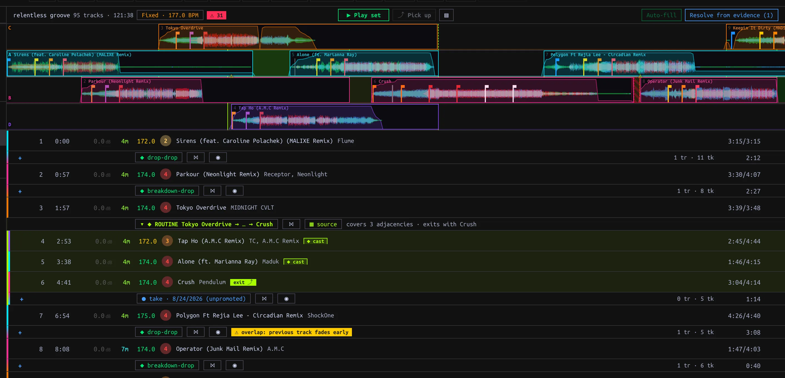
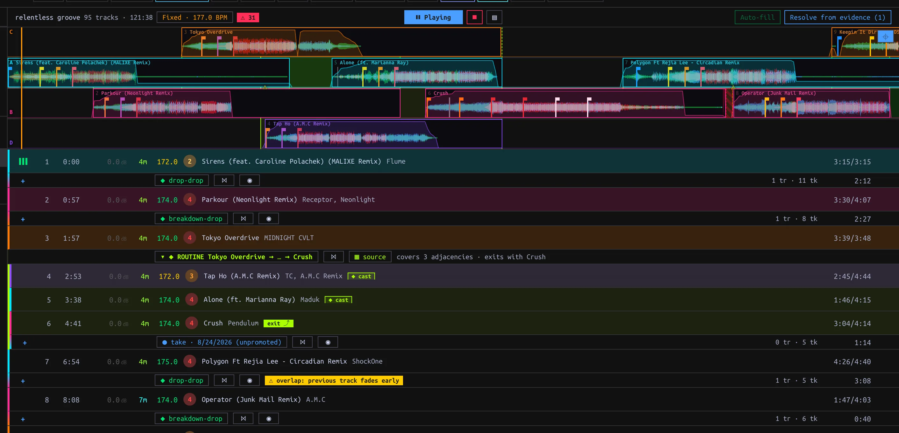

Plan and play a Set
Arrange Tracks, pin moves, inspect the plan and hand off Conductor playback.
On this page
Create and arrange
In the Library sidebar choose + New… → Set, enter a name and press Enter or ✓. Drag Library Tracks onto the Set's sidebar row or into its detail pane. Existing entries are skipped. A Set is distinct from a Playlist: a Playlist preserves curatorial Play order for Export; a Set records playable handovers. A Set's context menu includes Create playlist from set when you need a Playlist copy.
Click the Set to open its ordered rows and the Overview ladder. Drag entries to reorder; click to select, Shift-click a range, Cmd/Ctrl-click to toggle, then Delete/Backspace to remove. The row menu also has Move track(s) → Move here and Remove from set. + between entries opens suggestions for insertion; + suggest a track at the end appends. Suggestions change the order, not the pin for a boundary. A broken adjacency's pin goes dormant and returns if that ordered pair becomes adjacent again in the same Set.

Each boundary shows its current pin and evidence count; a Routine spans multiple consecutive entries.
Choose the move at each boundary
Click an adjacency pin chip to open its picker. The chip shows the effective move and the evidence counts (tr saved Transitions, tk Takes). Hover warning marks to inspect plan problems.
| Picker choice | Plan effect |
|---|---|
| Unpin (auto-resolve from the library) | Use the pair's favorite saved Transition, otherwise the most recently edited; with none, hard-cut. New saved Transitions can change this choice. Takes never auto-resolve. |
| Saved Transition | Pin this specific saved move, unaffected by saving another one for the pair. |
| Specific Take | Deliberately pin the idealized interpretation of that evidence; it has not been promoted to a Transition. |
| ✂ hard cut | Force a cut even if Transitions exist. |
| Matching Routine | Cover the matching consecutive cast entries rather than only a pair. The picker may also offer Routine evidence/candidates. |
↳ pin freezes an auto-resolved Transition. Auto-fill freezes available auto-resolved Transitions in bulk and does not pin Takes. Resolve from evidence previews suggested Take pins for unresolved gaps plus remaining hard cuts; inspect short ⚠ chop Takes before Pin N Takes. An unpracticed marker means the pair has neither saved Transition nor Take, not necessarily that its pin is unresolved. A Cameo is a separate guest pin on a host Track entry; it does not add a step to the Set order.
Use a boundary's ⋈ to open it in the Mix editor. ◉ Practice this handover stops the Conductor and cues the pair on Decks A/B for a manual mix; pressing it again re-cues. Merely opening practice does not create a Take: a qualifying live handover must occur and settle.
Play and inspect
Press ▶ Play set to start the Conductor on the shared Decks and Mixer. Its ⏸ Playing control pauses; ⏹ stops and pauses the Decks. A row's hover ▶ starts at that entry. Click the Overview ladder to seek, including into a handover: if idle this starts playback there; during a run it retains the current play/pause state. Horizontal wheel pans; vertical wheel zooms. ⌖ toggles follow-playback; manual scrolling disengages follow. ▤ hides the ladder without stopping playback.

Conductor playing from the Set; warning chips mark plan conditions to inspect.
The first Track starts at its beginning. Without an applicable Transition, a boundary cuts after the outgoing Track ends and starts the incoming at Hot Cue 1, or at its beginning. A pinned Take plays its vectorized rendition, not raw recorded events. The header Riding / Fixed · N BPM chip chooses tempo policy: Riding returns Tracks toward native tempo between handovers; Fixed uses the editable Set tempo for the whole Set. Review ⚠ N and adjacency warning tooltips for collisions, shortened tails or other plan flags.
Manual takeover and Pickup
Moving a Conductor-driven Deck or Mixer control stops automation and leaves the Decks sounding for live mixing. This differs from ⏹ Stop, which also pauses them. Capture resumes after manual takeover; machine-controlled Set playback does not generate Takes. ⤴ Pick up resumes the plan from live state only when it maps cleanly; hover an unlit control for the reason (for example a Track outside the Set or a misaligned blend). Fade a stray Deck before retrying. Current Pickup state matching is limited to A/B even though Conductor playback may use C/D; do not count on four-Deck Pickup. Changes to Set order, pins or Transition edits can re-plan an active run.